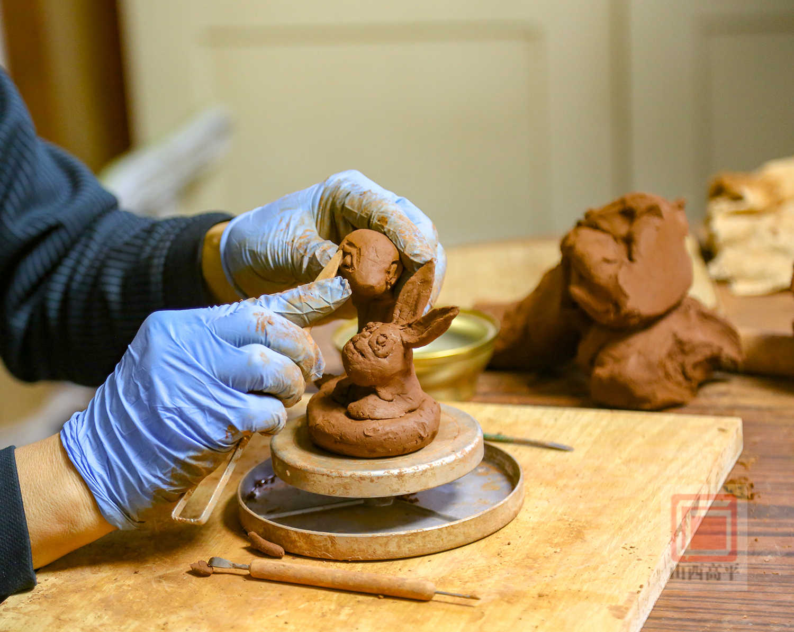
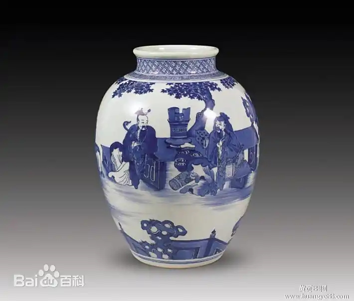

泥条盘筑法
技术特点：将黏土搓成均匀的泥条，一圈圈盘叠并按压紧实，逐步塑造器形（可制作较大或不规则器物）。
技术特点：最原始的成型方式，直接用双手捏制黏土塑造器形，无需复杂工具。
历史意义：开启了陶瓷制作的先河，体现了早期人类的手工创造力。 代表案例：河姆渡文化的陶釜、半坡遗址的人面鱼纹彩陶盆（部分初胚采用捏塑成型）。
步骤： 1. 准备好足够的黏土，选择适合的颜色和质地。 2. 将黏土揉搓成一个均匀的球状物。 3. 用手指和手掌开始捏塑，先确定基本形状，如头部、身体和四肢。可以用工具辅助，如刀具、牙签等。 4. 继续细化每个部位的细节，加入脸部特征、衣物纹理等。 5. 完成作品后，放置在通风干燥的地方进行固化。
技术特点：将黏土搓成均匀的泥条，一圈圈盘叠并按压紧实，逐步塑造器形（可制作较大或不规则器物）。
历史意义：突破了捏塑法对器形大小和复杂度的限制，是陶瓷成型技术的重要进步。 代表案例：马家窑文化的彩陶瓮、龙山文化的黑陶杯。
泥条盘筑法的核心是用搓制的泥条逐层盘叠塑形，最终制成陶艺作品。 1. 准备阶段 选用可塑性强的陶土，加水揉匀排气，避免后期开裂。 将陶土分成均匀小块，搓成直径一致、长度适中的泥条，放置在湿润的布上防止变干。 准备平整的工作台，可铺垫湿毛巾，同时备好喷水壶、刮刀、泥塑工具等。 2. 基底制作 取一块适量陶土，按压成圆形或所需形状的底座，厚度保持均匀（约 1-2 厘米）。 用工具将底座边缘压光，增强与第一层泥条的贴合度。 3. 盘筑塑形 从底座边缘开始，将泥条一圈圈盘绕，每盘一圈都用手指或工具将泥条与下层按压融合，消除接口缝隙。 盘筑过程中可根据设计调整器型，向内收或向外扩，保持器壁厚度均匀。 若泥条变干，用喷水壶少量喷水保湿；若过于湿润，可稍作晾晒再继续。 4. 修整完善 待作品基本成型且略有硬度时，用刮刀或手指修整器壁内外，使其光滑平整。 可通过添加泥条、按压、刻划等方式装饰表面，打造纹理或造型。 检查作品是否对称、接口是否牢固，有裂缝及时用湿泥修补。 5. 干燥烧制 将作品放在通风阴凉处自然阴干，避免阳光直射或风吹，防止开裂。 完全干燥后（无湿润感、重量变轻），放入窑中按照陶土特性进行素烧、上釉、釉烧，最终完成作品。
技术特点：在素烧后的陶坯上绘制图案，再施一层透明釉，经高温（1200-1300℃）烧制，图案被釉层覆盖，色泽温润、永不褪色。
历史意义：解决了传统彩绘易磨损的问题，成为中国陶瓷彩绘的重要流派。 代表案例：唐代的长沙窑青釉褐彩执壶、宋代的磁州窑白地黑花瓷枕。
1. 素烧：陶坯阴干后，经800-900℃素烧，增强坯体强度。 2. 施釉：素烧后的坯体表面施一层透明釉或底釉，均匀覆盖无气泡。 3. 彩绘：待釉层半干（不粘手），用釉下彩颜料（如青花料）绘制图案。 4. 釉烧：彩绘完成后，入窑经1200-1350℃高温烧制，颜料与釉层融合。
